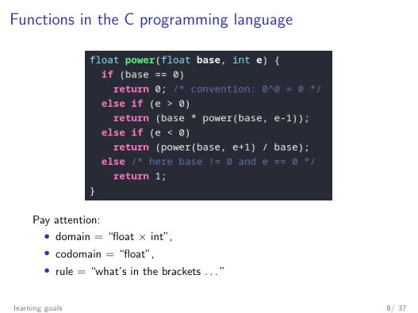
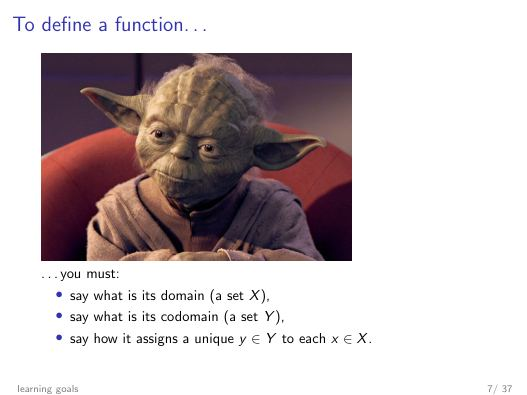
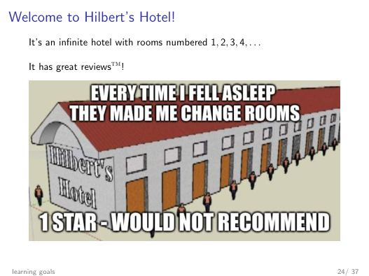
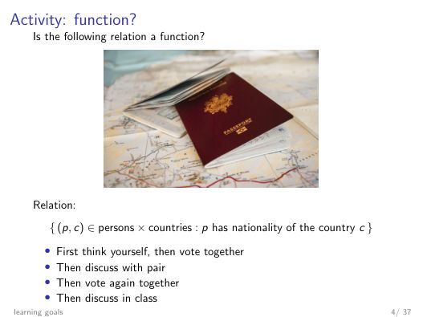

BM20A9200 数学A · 第 06 / 15 讲
第 6 讲 · 基数、可数集与对角线法
Cardinality, Countable Sets and Diagonalisation
所属章节：第 2 章 证明、函数与基数
资料来源 · 3 项 / 已附 0 项
06-lesson.pdf未附原文件07-exercise.pdf未附原文件Lecture4_Functions and cardinality of sets.pdf未附原文件
未附文件仅列原始名称；版本与核对日期由维护者登记。
本节定位
第 5 讲把函数定义清楚了；第 6 讲把这套定义用到两件事上：一是给出单射、满射、逆函数的可操作证明策略，二是回答一个看似天真的问题——集合有多大？有限集可以数元素，无限集必须换标准，于是引入基数（cardinality）与可数/不可数。
这一讲是全课程最“反直觉”的部分：偶数与自然数一样多、旅馆客满还能再住进无限多位客人、实数多到无法列表。直觉在这里几乎全部失效，唯一可靠的是双射。对应学习目标 6.4 与 7.1–7.3。
学完本节你应当能够：
- 说出定义一个函数必须交代的三件事（定义域、陪域、对应规则）
- 用“直接法/逆否法/解方程法”证明或否定单射与满射
- 用双射 f: A → B 证明两个集合基数相同
- 构造 N 与偶数集、N 与 Z、N 与 N×N 之间的双射
- 用 Hilbert 旅馆解释可数集“加一个”“加无限多个”仍可数
- 用对角线法证明 B(N)（全体 0/1 序列）不可数
6.1 定义一个函数要说清三件事
上一讲给的是形式定义，本讲看它在实践中意味着什么。要定义一个函数，必须说清：(a) 定义域（一个集合 X）；(b) 陪域（一个集合 Y）；(c) 如何给每个 x ∈ X 指定唯一的 y ∈ Y。缺任何一条，函数就没有被定义。
中学常说“设 f 是函数 x²”，这句话其实不清楚：它取值是多少？“可逆吗”？作用在数、空间点、图片、声音流还是网络结构上？只有写上定义域与陪域才有意义。中学的默认约定通常是“定义域取 R 中能取的最大子集，陪域取 R”，但那只是约定。
课件的程序语言对照很传神：C 语言的函数签名写明了“定义域 = float × int、陪域 = float、规则 = 括号里的内容”，与数学一致；Python 是动态类型（dynamically typed），不写类型，因此不能直接当作数学函数的定义——数学不是动态类型的。
6.2 从关系判定函数：两个实例
例（国籍）：{ (p, c) ∈ persons × countries : p 具有国家 c 的国籍 }。它是不是函数？如果允许双重国籍，一个人会对应两个 c，唯一性失败；若限定“每人只有一个国籍”，则是函数。这说明“是不是函数”取决于建模假设，而不是句子本身。
例（学号）：{ (s, i) ∈ students at LUT × texts : 学生 s 的学号是 i }。每个学生恰有一个学号（存在且唯一），所以是函数；反过来，没有两个学生共用同一学号，所以它还是单射（injection）。但它不是满射——并非每个字符串都是某个学生的学号。
这两例给出的判断顺序是：先查存在性（有没有人没有对应值），再查唯一性（有没有人对应两个值），最后才谈单射/满射。
6.3 单射的证明策略
要证 f: X → Y 是单射，有两条路。直接法：假设 x₁ ≠ x₂，证明 f(x₁) ≠ f(x₂)。逆否法（更常用）：假设 f(x₁) = f(x₂)，证明 x₁ = x₂。第三条等价说法：给定 y ∈ Y，方程 f(x) = y 在 X 中至多有 0 个或 1 个解。
要证 f 不是单射：找一对 x₁, x₂ ∈ X 使 x₁ ≠ x₂ 但 f(x₁) = f(x₂)。一对反例足够。
Ex1：f: [2, ∞[ → R、f(x) = x² − 4x + 7 是否单射？配方得 f(x) = (x − 2)² + 3，在 [2, ∞[ 上严格递增，故是单射。逆否证明：若 (x₁−2)² + 3 = (x₂−2)² + 3，则 (x₁−2)² = (x₂−2)²，即 |x₁ − 2| = |x₂ − 2|；因两者都 ≥ 0，得 x₁ − 2 = x₂ − 2，故 x₁ = x₂。□
Ex2：g: R → R、g(x) = |x + 5| 是否单射？取 x₁ = −4、x₂ = −6，两者不同，但 g 都等于 1，故不是单射。（图像是 V 形，水平线撞两次。）
6.4 满射的证明策略
要证满射：设 y ∈ Y 是任意的（arbitrary，不是特殊选取的），证明存在 x ∈ X 使 f(x) = y。实际操作就是解方程 f(x) = y 并把 x 写出来。要证不是满射：找一个 y ∈ Y，使 f(x) = y 在 X 中无解。
Ex3：f: R → [3, ∞[、f(x) = x² − 4x + 7 是否满射？配方 f(x) = (x−2)² + 3 ≥ 3。任取 y ≥ 3，解 (x−2)² + 3 = y，得 (x−2)² = y − 3 ≥ 0，取 x = 2 + √(y − 3)，则 f(x) = y。故是满射。
Ex4：g: R → R、g(x) = |x + 5| 是否满射？取 y = −1，对任意 x 都有 g(x) ≥ 0 > −1，故无解，不是满射。注意这与“值域是 [0, ∞[”是一致的：陪域 R 比值域大，所以不满射。
6.5 复合与逆：两个提醒
复合例（源文件 p17）：f: N → Z, f(n) = n² − 25；g: Z → R, g(r) = πr²。则 (g ∘ f)(n) = π(n² − 25)²。务必先算 f 再平方，括号不能省。第二个例子（字符串的 LL 与 FW）说明复合不交换：FW ∘ LL 取最后字符，LL ∘ FW 取第一个单词的最后字符。
逆函数要检查两个方向：g(f(x)) = x 与 f(g(y)) = y 都对，才写 g = f⁻¹。f: R → [0,∞[、f(x)=x² 与 g: [0,∞[ → R、g(y)=√y 满足 f(g(y)) = y，但 g(f(−1)) = 1 ≠ −1，所以 g ≠ f⁻¹；事实上 f 不是双射，逆不存在。
6.6 先比较有限集：元素个数
两个有限集 A、B “一样大”当且仅当元素个数相同，记 #A = #B。#A 的取值是自然数 0, 1, 2, … 或无穷 ∞。
Ex5 练习：#{a, b, c, d} = 4；#{ x ∈ R : x² − 2x − 1 = 0 } = 2（判别式 4 + 4 = 8 > 0，两个实根）；#{ n ∈ N : (−5)ⁿ > 0 }：n 为偶数时为正，n 为奇数时为负，故个数为无穷（∞）。
6.7 无限集：用双射定义基数
两个集合 A、B 基数相同（have the same cardinality）当且仅当存在双射 f: A → B。这把元素“一一配对”，不需要数数。
两条例子：若 #A = n、#B = m 都是有限数，则 A 与 B 基数相同当且仅当 n = m（与“个数相同”一致）；N 与偶数集 {0, 2, 4, 6, …} 基数相同，双射是 f(n) = 2n（Ex6 要求证明这一点：单射显然，满射因任意偶数 2k 都有原像 k）。
还有一个方向性结论：存在满射 P(N) → N，但不存在单射 P(N) → N，故 P(N) 比 N “大”。（证明在背景材料 Lecture 4 的 Example 18；本课程只要求知道结论与“用双射比较”的方法。）
6.8 可数与不可数
若存在双射 N → A，则称 A 可数（countable）。若 A 无限但不可数，则称不可数（uncountable）。可数的直观含义是“能把元素排成一个无限列表”：若 f: N → S 是双射，则 S = {f(1), f(2), f(3), …}，因为 f 是满射保证都列到，f 是单射保证不重复。
历史注记：Cantor（1845–1918）在 1880 年代的著作是集合论的起点，他引入幂集、确立一一对应的重要性、定义无限集，并证明不可数集存在。课件也提到近年有研究指出他可能有学术伦理问题（未列入合作者姓名）。
6.9 基数不等于“密度”
很多人认为偶数集 E = {2, 4, 6, …} 的元素“只有正整数的一半”。这是错的：两者都无限多，#E = ∞ = #Z⁺，而且基数相同，双射是 h(n) = n/2。
不过它们确实有不同的密度（density）：#(E ∩ {1,…,n}) / n → 1/2，而 #(Z⁺ ∩ {1,…,n}) / n → 1。所以“一样大”有三种口径：元素个数（仅有限集）、基数（本课程采用）、密度（不讨论）。考试里凡问“是否一样多”，一律用基数回答。
6.10 Hilbert 旅馆
旅馆有房间 1, 2, 3, …，全部客满。来了一位新客人，经理想出办法：广播“请每位客人搬到下一号房，1 号搬 2 号，2 号搬 3 号……”。于是 1 号房空出来给新客人，没有人退房。对应的双射是 n ↦ n + 1，它把正整数集映到 {2, 3, 4, …}，留下 1 号房。
第二晚来了无限多位新客人（Guest 1, Guest 2, …）。经理让老客人搬到“房号的两倍”：n ↦ 2n，于是所有奇数号房空出；新客人按 n ↦ 2n − 1 入住。两个映射合起来是 N → N 的双射，说明“已满的无限旅馆”还能再容纳可数无限多客人。
课件的思考题：房费 1 欧元、维护费 500 欧元，旅馆怎么活？提示是看现金流与“无限”的关系——这是数学玩笑，不必深究；要点是理解“无限集可以与其真子集等势”。
6.11 可数集的两条封闭性质
命题：若 A、B 都是可数无限集，则 (a) A ∪ B 可数无限；(b) A × B 可数无限。直观对应旅馆的两种情形：(a) 是可数无限多客人来到已满的旅馆；(b) 是可数无限辆大巴、每辆载可数无限多客人来到空旅馆。
构造思路（(b)）：把 A、B 都按 N 编号，a₀, a₁, a₂, … 与 b₀, b₁, b₂, …，再按“对角线”枚举：先列 (a₀,b₀)，再列和为 1 的两对 (a₀,b₁)、(a₁,b₀)，再列和为 2 的三对……每一对都会在有限步内被列到，且不重复，于是得到 N → A × B 的双射。
另一条常用双射是 (m, n) ↦ 2m(2n + 1)，它把 N × N 双射到正整数（每个正整数唯一分解为 2 的幂乘以奇数）。考试里若要证明 N × N 可数，给出任一显式双射即可。
6.12 不可数：实数无法列表
R 是无限集，但它的元素极难（事实上不可能）排成一个列表：无论你给出什么列表，我都能构造出一个不在列表里的数——这就是 Cantor 的对角化论证（diagonalisation argument）。
定义：若 A 无限但不存在双射 f: N → A，则 A 不可数。常见不可数集：R 及 R²、R³、Rⁿ；P(N)；从某个无限集 X 到“至少有 2 个元素”的集合 Y 的全体函数 {f: X → Y}；还有很多。
6.13 证明不可数的两种策略
策略 1（直接）：构造一个到已知不可数集（如 R 或 P(N)）的双射。策略 2（反证）：假设它可数，导出矛盾。最有名的策略 2 就是对角化。
对角化的标准范例：全体无限二进制序列 B(N) = { s : N → {0, 1} } 不可数。证明：假设存在双射 f: N → B(N)，记 s_n = f(n)，于是所有序列可以竖排成一张表，第 n 行是 s_n 的各位。构造新序列 s_new(n) = 0（若 s_n(n) = 1）、s_new(n) = 1（若 s_n(n) = 0），即把对角线上每一位取反。
检验：s_new ≠ s₀，因为第 0 位不同；s_new ≠ s₁，因为第 1 位不同；对任意 x，s_new ≠ s_x，因为第 x 位不同。所以 s_new 不在表里。但 s_new ∈ B(N)，与“表列出全部元素”矛盾。故 B(N) 不可数。□
为什么这条证明能用在 R 上？因为实数（在 [0,1] 区间内）可以写成二进制小数，其各位构成 0/1 序列；把序列的集合换成实数的集合，对角化照搬即可。注意二进制小数有“0.1000… = 0.0111…”这类双表示问题，严格证明时要避开，本课程只要求掌握结构与思想。
6.14 拓展：基数的大小比较
记号：若存在单射 f: A → B，则说 A 的基数不超过 B 的基数，写 A ≾ B；若存在满射 f: A → B，则说 A 的基数不小于 B 的，写 A ≿ B。
Cantor–Schröder–Bernstein 定理：若 A ≾ B 且 B ≾ A，则 A ≈ B（存在双射）。课件打趣说它的证明“像洋葱：一层一层，而且会让你流泪”。它的实用价值是：要证两个集合基数相同，可以分别构造两个方向的单射，往往比直接构造双射容易。
另有几条需要选择公理（axiom of choice）的结论：(a) 若 A ≿ B 且 B ≿ A 则 A ≈ B；(b) 若 A ≿ B 且 A ≾ B 则 A ≈ B；(c) 分割原理（partition principle）：若 A ≿ B 则 B ≾ A。这些属拓展，考试不要求证明。
把整讲的逻辑再串一遍：比较大小先问“是有限集吗”。有限集直接数元素；无限集改用双射，因为数数会永远数不完。一旦用双射，就会发现 N、偶数集、Z、N×N、全体素数、全体有理数 Q 全都“一样大”，而 R、P(N)、B(N) 都比它们严格更大。判卷时最常见的错误是把“看起来稀疏”当作“更小”——稀疏是密度，大小是基数。
定义一个函数要说清三件事：定义域 X、陪域 Y，以及如何给每个 x ∈ X 指定唯一的 y ∈ Y，缺一不可。中学说函数 x² 并不完整，只有写上定义域与陪域才谈得上可逆；C 的函数签名写明了 float×int 到 float，与数学一致，Python 动态类型不写类型，不能直接当数学函数定义。判断关系是否函数，先查存在性再查唯一性，最后才谈单射满射：允许双重国籍就不是函数，每人恰一学号则是函数且单射，但并非每个字符串都是学号，故不满射。
原版图页（源 PDF 插图页）







| English | 中文 | 说明 / 例句 |
|---|---|---|
| cardinality | 基数 | A and B have the same cardinality iff a bijection A → B exists. |
| countable | 可数 | There is a bijection N → A; the elements can be listed. |
| uncountable | 不可数 | Infinite but no bijection from N exists. |
| Hilbert’s hotel | 希尔伯特旅馆 | A full infinite hotel can still take new guests. |
| diagonalisation | 对角化 | Flip the diagonal to build an element missing from any list. |
| infinite binary sequence | 无限二进制序列 | A map s: N → {0, 1}; the set B(N) is uncountable. |
| density | 密度 | The limit of #(A ∩ {1,…,n})/n; different from cardinality. |
| one-to-one correspondence | 一一对应 | A bijection; pairs elements without counting. |
| proper subset | 真子集 | An infinite set can be equinumerous with a proper subset. |
| Cantor–Schröder–Bernstein | 康托-伯恩斯坦定理 | Injections both ways imply a bijection. |
| axiom of choice | 选择公理 | Needed for some comparisons of cardinalities. |
| enumeration | 枚举 | Listing elements as a₀, a₁, a₂, … to build a bijection from N. |
先配方：f(x) = (x − 2)² + 3，故最小值 3 在 x = 2 取到，图像是开口向上的抛物线。
作为 [2, ∞[ → R：在 [2, ∞[ 上严格递增。设 f(x₁) = f(x₂)，则 (x₁−2)² = (x₂−2)²，即 |x₁−2| = |x₂−2|；因 x₁−2, x₂−2 ≥ 0，得 x₁ = x₂。故是单射。
作为 R → [3, ∞[：任取 y ≥ 3，解 (x−2)² = y − 3，取 x = 2 + √(y−3)，则 f(x) = y，故是满射。
作为 R → R：既不单射（f(1) = f(3) = 4）也不满射（y = 0 无解）。三个结论不同，唯一差别是定义域与陪域。
构造 f: N → E、f(n) = 2n。先确认它确实映到 E（值都是偶数，合法）。
单射：若 2n₁ = 2n₂，两边除以 2 得 n₁ = n₂。满射：任取 m ∈ E，则 m = 2k 对某个 k ∈ N，取 n = k 得 f(n) = m。
故 f 是双射，N 与 E 基数相同。□ 这与“偶数只占一半”的直觉冲突，冲突来自把“密度”当成了“基数”。
反证。假设存在双射 f: N → B(N)，记 s_n = f(n)。把所有序列竖排成表：第 n 行是 s_n(0), s_n(1), s_n(2), …。
定义新序列 s_new(n) = 0（若 s_n(n) = 1）、s_new(n) = 1（若 s_n(n) = 0），即对角位取反。
对任意 x ∈ N，比较 s_new 与 s_x：它们在位置 x 上不同（一个是 0、一个是 1），故 s_new ≠ s_x。
于是 s_new 不在表中，但 s_new ∈ B(N)，与“表包含全部元素”矛盾。故不存在这样的双射，B(N) 不可数。□
显式公式：g(m, n) = 2m(2n + 1)。由算术基本定理，每个正整数唯一写成“2 的幂 × 奇数”，故 g 是双射（单射：分解唯一；满射：任给 k，把它写成 2m 乘奇数 2n+1）。
对角线枚举的直观：把 N × N 画成方格，(0,0)；(0,1)、(1,0)；(0,2)、(1,1)、(2,0)；…… 按 m + n 递增逐条对角线枚举，每条对角线上元素有限，故每个 (m, n) 都会在有限步内被访问且只访问一次，于是得到 N → N × N 的双射。
两种构造都说明 N × N 可数，这是 6.11 节 (b) 的具体实现。
设 A = {a₀, a₁, a₂, …} 可数，新元素为 b。定义 h: A ∪ {b} → A：h(b) = a₀，h(aₙ) = an+1。
单射：b 映到 a₀，而 aₙ 映到 an+1，后者的下标 ≥ 1，与 a₀ 不冲突；不同 aₙ 的下标不同，像也不同。满射：a₀ 有原像 b，ak（k ≥ 1）有原像 ak−1。
故 A ∪ {b} 与 A 基数相同，即可数。这就是“全体客人搬到下一号房”的数学版本。若新来可数无限多位，则用 h(bₙ) = a2n−1、h(aₙ) = a2n（下标从 1 起），同样得到双射。
- 判断 f: R → R、f(x) = 2x + 1 的单射与满射性，并求逆。
- 证明 N 与 Z 基数相同（构造双射）。
- 判断 g: [0, ∞[ → [0, ∞[、g(x) = x² 是否为双射，并求逆。
- 说明为什么“存在满射 P(N) → N”意味着 P(N) 不比 N 小。
- 用对角线法证明区间 (0, 1) 内的实数不可数（写出构造思路即可）。
参考答案与思路
1. 单射：2x₁ + 1 = 2x₂ + 1 ⇒ x₁ = x₂。满射：任取 y，取 x = (y − 1)/2 ∈ R。故双射，f⁻¹(y) = (y − 1)/2。
2. 双射：f(0) = 0，f(1) = 1，f(2) = −1，f(3) = 2，f(4) = −2…… 即 n 偶时 f(n) = n/2，n 奇时 f(n) = −(n+1)/2。单射与满射都可逐条验证。
3. 单射：x₁² = x₂² 且两者 ≥ 0 ⇒ x₁ = x₂。满射：任取 y ≥ 0，取 x = √y。故双射，g⁻¹(y) = √y。
4. 若有满射 P(N) → N，则 P(N) 的基数不小于 N；而由 Cantor 定理不存在单射 P(N) → N，故 P(N) 严格更大。这与“R 不可数”是同一层次的结论。
5. 假设 (0,1) 可数，列出 x₁, x₂, …，每个写成二进制小数 0.b₁b₂…。取新数 y，其第 n 位取反（并避开双表示问题，例如规定只用不终止的展开）。则 y ≠ xₙ 对一切 n 成立，但 y ∈ (0,1)，矛盾。
考点分层
方法清单
证明两个集合基数相同
- 先猜一个自然的配对规则（n ↦ 2n、n ↦ n/2、m,n ↦ 2m(2n+1) 等）
- 验证它映到目标集合（值域正确）
- 证单射：由 f(a) = f(b) 推出 a = b
- 证满射：任取目标元素，构造原像并代回验证
- 写结论：存在双射，故基数相同
证明一个集合不可数
- 先假设存在双射 f: N → A，把元素排成表
- 对“表”做对角构造，造出一个不可能在表里的元素
- 验证该元素确实属于 A（这一步最容易被忽略）
- 指出与“表包含全部元素”矛盾
- 若 A 是实数，先把实数写成小数/二进制展开，再套同一构造
判断单射与满射（公式型函数）
- 写出定义域与陪域，配方或求导判断单调性与值域
- 单射：设 f(x₁) = f(x₂) 推 x₁ = x₂，或给出一对撞车的反例
- 满射：任取 y，解 f(x) = y，检查解是否落在定义域内
- 两者都成立才是双射；此时才谈逆函数
| 源文件 | 页码 | 覆盖的知识点 |
|---|---|---|
| 06-lesson.pdf | p5–p11 | 函数的实践含义、国籍与学号两例、C 与 Python 的对照、定义函数的三要素 |
| 06-lesson.pdf | p12–p16 | 单射/满射/双射回顾、单射与满射的证明策略、Ex1–Ex4、复合例 |
| 06-lesson.pdf | p18–p19 | 逆函数的双向检验、√(x²) = |x| 的反例 |
| 06-lesson.pdf | p22–p27 | 元素个数 #A、Ex5、用双射定义基数、可数/不可数、Cantor、密度与基数的区别 |
| 06-lesson.pdf | p29–p34 | Hilbert 旅馆的两次扩容、可数集对并与积的封闭性 |
| 06-lesson.pdf | p36–p43 | 实数不可列表、不可数的定义与常见例子、两种证明策略、B(N) 的对角化证明、Cantor–Schröder–Bernstein 与选择公理 |
| 07-exercise.pdf | Ex1、Ex2 | 字符串拼接函数的单射/满射、置换与双射练习 |
| （跳过） | p6–p7、p13–p14、p29–p33 | 课堂活动与故事页，结论已并入正文 |
| （补充拓展） | — | N×N 的显式双射 2m(2n+1)、对角线枚举的图示解释、(0,1) 不可数的二进制版本 |